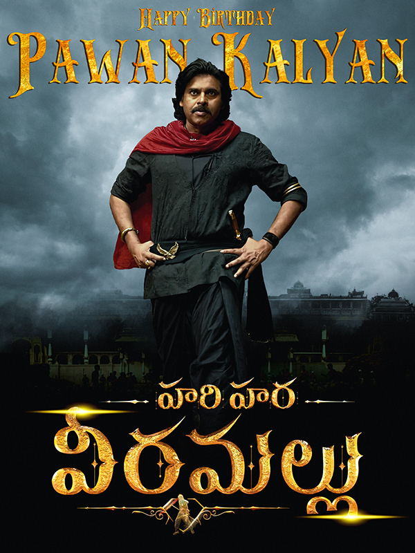
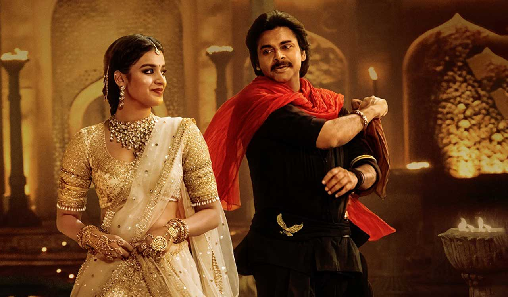
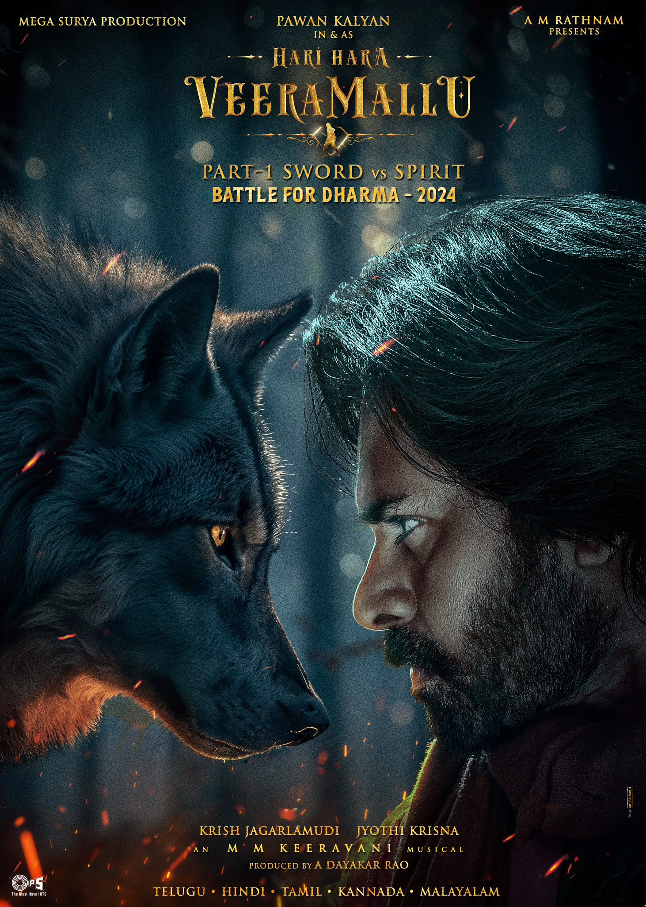
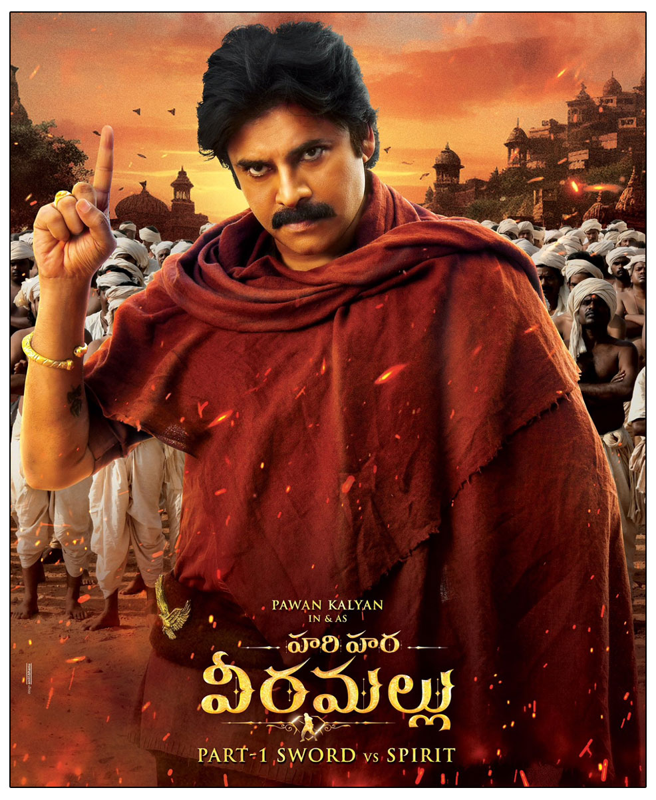

2025 ‧ Action/Adventure ‧ 2h 30m
   
Pawan Kalyan as Veera Mallu
Nidhhi Agerwal as Panchami
Nargis Fakhri as Roshanara
Nora Fatehi as Roshanara begum
Sonakshi Sinha as Meenakshi
Bobby Deol
Pujita Ponnada
Arjun Rampal as Aurangzeb
Dalip Tahil as Abul Hasan
Subhalekha as Sudhakar
Adithya
Vikramjeet Virk as Mirza Khan
Koushik Mahata
Rajiv Kachroo as Dara Shikoh
Hari Hara Veera Mallu: Part 1 is an Indian upcoming Telugu-language swashbuckler
action film directed by
Krish Jagarlamudi and A. M. Jyothi Krishna from a screenplay by Jagarlamudi
and Sai Madhav Burra.